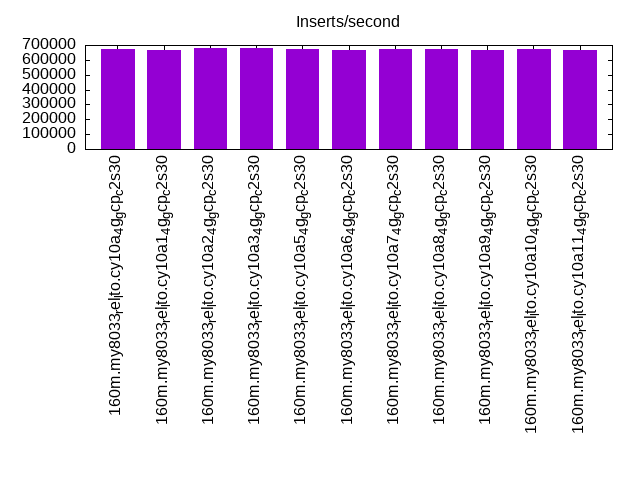
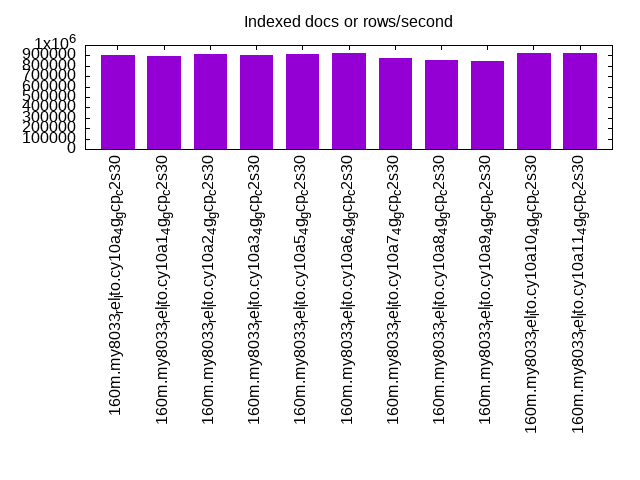
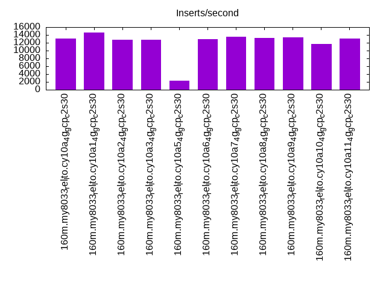
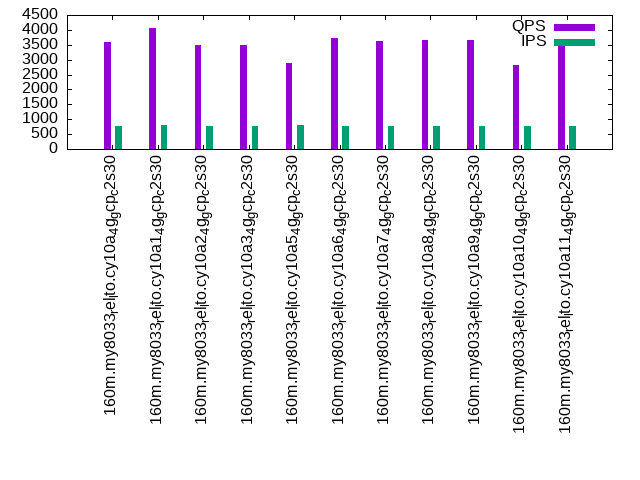
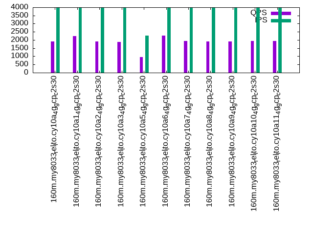
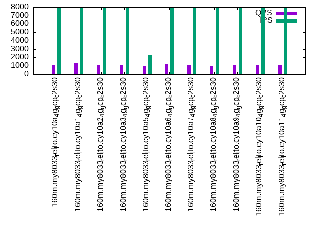

This is a report for the insert benchmark with 160M docs and 8 client(s). It is generated by scripts (bash, awk, sed) and Tufte might not be impressed. An overview of the insert benchmark is here and a short update is here. Below, by DBMS, I mean DBMS+version.config. An example is my8020.c10b40 where my means MySQL, 8020 is version 8.0.20 and c10b40 is the name for the configuration file.
The test server is a c2-standard-30 from GCP with 15 cores, hyperthreads disabled, 120G RAM, XFS + SW RAID 0 on 4 NVMe devices (1.5TB). The benchmark was run with 8 client and there were 1 or 3 connections per client (1 for queries or inserts without rate limits, 1+1 for rate limited inserts+deletes). There are 8 tables, client per table. It loads 160M rows without secondary indexes, creates secondary indexes, then inserts 80M rows with a delete per insert to avoid growing the table. It then does 3 read+write tests for 1800s each that do queries as fast as possible with 100, 500 and then 1000 inserts/second/client concurrent with the queries and 1000 deletes/second to avoid growing the table. The database is cached the OS but not by InnoDB.
The tested DBMS are:
The numbers are inserts/s for l.i0 and l.i1, indexed docs (or rows) /s for l.x and queries/s for q*.2. The values are the average rate over the entire test for inserts (IPS) and queries (QPS). The range of values for IPS and QPS is split into 3 parts: bottom 25%, middle 50%, top 25%. Values in the bottom 25% have a red background, values in the top 25% have a green background and values in the middle have no color. A gray background is used for values that can be ignored because the DBMS did not sustain the target insert rate. Red backgrounds are not used when the minimum value is within 80% of the max value.
| dbms | l.i0 | l.x | l.i1 | q100.1 | q500.1 | q1000.1 |
|---|---|---|---|---|---|---|
| 160m.my8033_rel_lto.cy10a_4g_gcp_c2s30 | 675105 | 904520 | 13098 | 3577 | 1906 | 1101 |
| 160m.my8033_rel_lto.cy10a1_4g_gcp_c2s30 | 669456 | 889444 | 14548 | 4073 | 2236 | 1292 |
| 160m.my8033_rel_lto.cy10a2_4g_gcp_c2s30 | 677966 | 909659 | 12796 | 3502 | 1902 | 1113 |
| 160m.my8033_rel_lto.cy10a3_4g_gcp_c2s30 | 677966 | 904520 | 12747 | 3498 | 1895 | 1113 |
| 160m.my8033_rel_lto.cy10a5_4g_gcp_c2s30 | 672269 | 909659 | 2308 | 2880 | 952 | 946 |
| 160m.my8033_rel_lto.cy10a6_4g_gcp_c2s30 | 669456 | 925434 | 12884 | 3717 | 2266 | 1170 |
| 160m.my8033_rel_lto.cy10a7_4g_gcp_c2s30 | 675105 | 874863 | 13479 | 3641 | 1931 | 1056 |
| 160m.my8033_rel_lto.cy10a8_4g_gcp_c2s30 | 675105 | 856150 | 13258 | 3665 | 1923 | 1023 |
| 160m.my8033_rel_lto.cy10a9_4g_gcp_c2s30 | 669456 | 847090 | 13371 | 3669 | 1916 | 1132 |
| 160m.my8033_rel_lto.cy10a10_4g_gcp_c2s30 | 672269 | 920115 | 11760 | 2814 | 1946 | 1134 |
| 160m.my8033_rel_lto.cy10a11_4g_gcp_c2s30 | 663900 | 920115 | 13102 | 3630 | 1946 | 1131 |
This table has relative throughput, throughput for the DBMS relative to the DBMS in the first line, using the absolute throughput from the previous table.
| dbms | l.i0 | l.x | l.i1 | q100.1 | q500.1 | q1000.1 |
|---|---|---|---|---|---|---|
| 160m.my8033_rel_lto.cy10a_4g_gcp_c2s30 | 1.00 | 1.00 | 1.00 | 1.00 | 1.00 | 1.00 |
| 160m.my8033_rel_lto.cy10a1_4g_gcp_c2s30 | 0.99 | 0.98 | 1.11 | 1.14 | 1.17 | 1.17 |
| 160m.my8033_rel_lto.cy10a2_4g_gcp_c2s30 | 1.00 | 1.01 | 0.98 | 0.98 | 1.00 | 1.01 |
| 160m.my8033_rel_lto.cy10a3_4g_gcp_c2s30 | 1.00 | 1.00 | 0.97 | 0.98 | 0.99 | 1.01 |
| 160m.my8033_rel_lto.cy10a5_4g_gcp_c2s30 | 1.00 | 1.01 | 0.18 | 0.81 | 0.50 | 0.86 |
| 160m.my8033_rel_lto.cy10a6_4g_gcp_c2s30 | 0.99 | 1.02 | 0.98 | 1.04 | 1.19 | 1.06 |
| 160m.my8033_rel_lto.cy10a7_4g_gcp_c2s30 | 1.00 | 0.97 | 1.03 | 1.02 | 1.01 | 0.96 |
| 160m.my8033_rel_lto.cy10a8_4g_gcp_c2s30 | 1.00 | 0.95 | 1.01 | 1.02 | 1.01 | 0.93 |
| 160m.my8033_rel_lto.cy10a9_4g_gcp_c2s30 | 0.99 | 0.94 | 1.02 | 1.03 | 1.01 | 1.03 |
| 160m.my8033_rel_lto.cy10a10_4g_gcp_c2s30 | 1.00 | 1.02 | 0.90 | 0.79 | 1.02 | 1.03 |
| 160m.my8033_rel_lto.cy10a11_4g_gcp_c2s30 | 0.98 | 1.02 | 1.00 | 1.01 | 1.02 | 1.03 |
This lists the average rate of inserts/s for the tests that do inserts concurrent with queries. For such tests the query rate is listed in the table above. The read+write tests are setup so that the insert rate should match the target rate every second. Cells that are not at least 95% of the target have a red background to indicate a failure to satisfy the target.
| dbms | q100.1 | q500.1 | q1000.1 |
|---|---|---|---|
| my8033_rel_lto.cy10a_4g_gcp_c2s30 | 788 | 3962 | 7908 |
| my8033_rel_lto.cy10a1_4g_gcp_c2s30 | 790 | 3962 | 7912 |
| my8033_rel_lto.cy10a2_4g_gcp_c2s30 | 786 | 3962 | 7886 |
| my8033_rel_lto.cy10a3_4g_gcp_c2s30 | 786 | 3960 | 7886 |
| my8033_rel_lto.cy10a5_4g_gcp_c2s30 | 793 | 2262 | 2262 |
| my8033_rel_lto.cy10a6_4g_gcp_c2s30 | 787 | 3958 | 7916 |
| my8033_rel_lto.cy10a7_4g_gcp_c2s30 | 787 | 3962 | 7899 |
| my8033_rel_lto.cy10a8_4g_gcp_c2s30 | 788 | 3965 | 7912 |
| my8033_rel_lto.cy10a9_4g_gcp_c2s30 | 784 | 3967 | 7864 |
| my8033_rel_lto.cy10a10_4g_gcp_c2s30 | 789 | 3960 | 7921 |
| my8033_rel_lto.cy10a11_4g_gcp_c2s30 | 787 | 3958 | 7908 |
| target | 800 | 4000 | 8000 |
l.i0: load without secondary indexes. Graphs for performance per 1-second interval are here.
Average throughput:
Insert response time histogram: each cell has the percentage of responses that take <= the time in the header and max is the max response time in seconds. For the max column values in the top 25% of the range have a red background and in the bottom 25% of the range have a green background. The red background is not used when the min value is within 80% of the max value.
| dbms | 256us | 1ms | 4ms | 16ms | 64ms | 256ms | 1s | 4s | 16s | gt | max |
|---|---|---|---|---|---|---|---|---|---|---|---|
| my8033_rel_lto.cy10a_4g_gcp_c2s30 | 28.032 | 71.735 | 0.191 | 0.028 | 0.014 | 0.246 | |||||
| my8033_rel_lto.cy10a1_4g_gcp_c2s30 | 23.201 | 76.560 | 0.197 | 0.028 | 0.014 | 0.220 | |||||
| my8033_rel_lto.cy10a2_4g_gcp_c2s30 | 31.965 | 67.797 | 0.203 | 0.021 | 0.014 | 0.213 | |||||
| my8033_rel_lto.cy10a3_4g_gcp_c2s30 | 27.980 | 71.784 | 0.204 | 0.017 | 0.014 | 0.216 | |||||
| my8033_rel_lto.cy10a5_4g_gcp_c2s30 | 23.204 | 76.558 | 0.202 | 0.022 | 0.014 | 0.221 | |||||
| my8033_rel_lto.cy10a6_4g_gcp_c2s30 | 21.901 | 77.850 | 0.209 | 0.026 | 0.014 | 0.218 | |||||
| my8033_rel_lto.cy10a7_4g_gcp_c2s30 | 29.957 | 69.804 | 0.198 | 0.026 | 0.014 | 0.208 | |||||
| my8033_rel_lto.cy10a8_4g_gcp_c2s30 | 28.360 | 71.402 | 0.203 | 0.021 | 0.014 | 0.220 | |||||
| my8033_rel_lto.cy10a9_4g_gcp_c2s30 | 27.347 | 72.401 | 0.211 | 0.027 | 0.014 | 0.212 | |||||
| my8033_rel_lto.cy10a10_4g_gcp_c2s30 | 26.330 | 73.427 | 0.197 | 0.032 | 0.014 | 0.227 | |||||
| my8033_rel_lto.cy10a11_4g_gcp_c2s30 | 17.263 | 82.479 | 0.205 | 0.039 | 0.014 | 0.237 |
Performance metrics for the DBMS listed above. Some are normalized by throughput, others are not. Legend for results is here.
ips qps rps rmbps wps wmbps rpq rkbpq wpi wkbpi csps cpups cspq cpupq dbgb1 dbgb2 rss maxop p50 p99 tag 675105 0 0 0.0 1186.4 171.0 0.000 0.000 0.002 0.259 177793 73.0 0.263 16 10.6 139.1 4.7 0.246 91601 70946 160m.my8033_rel_lto.cy10a_4g_gcp_c2s30 669456 0 0 0.0 1219.5 171.7 0.000 0.000 0.002 0.263 165536 73.3 0.247 16 10.6 139.1 4.7 0.220 90502 70324 160m.my8033_rel_lto.cy10a1_4g_gcp_c2s30 677966 0 0 0.0 1187.1 169.4 0.000 0.000 0.002 0.256 182089 72.8 0.269 16 10.6 139.1 4.7 0.213 92799 73450 160m.my8033_rel_lto.cy10a2_4g_gcp_c2s30 677966 0 0 0.0 1185.3 170.9 0.000 0.000 0.002 0.258 175473 73.0 0.259 16 10.6 139.1 4.7 0.216 91800 70388 160m.my8033_rel_lto.cy10a3_4g_gcp_c2s30 672269 0 0 0.0 1173.8 168.9 0.000 0.000 0.002 0.257 172562 73.0 0.257 16 10.6 139.1 4.7 0.221 91301 71262 160m.my8033_rel_lto.cy10a5_4g_gcp_c2s30 669456 0 0 0.0 1361.3 181.2 0.000 0.000 0.002 0.277 175698 73.1 0.262 16 10.6 139.1 4.7 0.218 90602 72522 160m.my8033_rel_lto.cy10a6_4g_gcp_c2s30 675105 0 0 0.0 1188.2 170.9 0.000 0.000 0.002 0.259 183154 72.8 0.271 16 10.6 139.1 4.6 0.208 91701 72521 160m.my8033_rel_lto.cy10a7_4g_gcp_c2s30 675105 0 0 0.0 1182.2 168.7 0.000 0.000 0.002 0.256 176390 73.0 0.261 16 10.6 139.1 4.3 0.220 91801 72821 160m.my8033_rel_lto.cy10a8_4g_gcp_c2s30 669456 0 0 0.0 1229.1 170.1 0.000 0.000 0.002 0.260 177715 73.0 0.265 16 10.6 139.1 3.8 0.212 90895 73121 160m.my8033_rel_lto.cy10a9_4g_gcp_c2s30 672269 0 0 0.0 1202.8 171.8 0.000 0.000 0.002 0.262 187758 73.1 0.279 16 10.6 139.1 4.7 0.227 90902 71223 160m.my8033_rel_lto.cy10a10_4g_gcp_c2s30 663900 0 0 0.0 1347.9 179.9 0.000 0.000 0.002 0.277 169465 72.7 0.255 16 10.6 27.1 4.7 0.237 90235 70223 160m.my8033_rel_lto.cy10a11_4g_gcp_c2s30
l.x: create secondary indexes.
Average throughput:
Performance metrics for the DBMS listed above. Some are normalized by throughput, others are not. Legend for results is here.
ips qps rps rmbps wps wmbps rpq rkbpq wpi wkbpi csps cpups cspq cpupq dbgb1 dbgb2 rss maxop p50 p99 tag 904520 0 4570 290.9 16503.0 897.0 0.005 0.329 0.018 1.015 102251 67.5 0.113 11 23.5 152.1 4.7 0.012 NA NA 160m.my8033_rel_lto.cy10a_4g_gcp_c2s30 889444 0 4446 282.9 16164.7 874.4 0.005 0.326 0.018 1.007 101474 66.0 0.114 11 23.5 152.1 4.7 0.013 NA NA 160m.my8033_rel_lto.cy10a1_4g_gcp_c2s30 909659 0 4572 290.9 16536.6 897.9 0.005 0.327 0.018 1.011 97887 68.5 0.108 11 23.5 152.1 4.7 0.013 NA NA 160m.my8033_rel_lto.cy10a2_4g_gcp_c2s30 904520 0 4572 291.0 16518.8 896.8 0.005 0.329 0.018 1.015 97230 69.1 0.107 11 23.5 152.1 4.7 0.009 NA NA 160m.my8033_rel_lto.cy10a3_4g_gcp_c2s30 909659 0 4571 290.8 16545.6 899.9 0.005 0.327 0.018 1.013 100901 68.1 0.111 11 23.5 152.1 4.7 0.018 NA NA 160m.my8033_rel_lto.cy10a5_4g_gcp_c2s30 925434 0 4706 299.5 16018.0 903.2 0.005 0.331 0.017 0.999 86594 70.5 0.094 11 23.5 152.1 4.7 0.010 NA NA 160m.my8033_rel_lto.cy10a6_4g_gcp_c2s30 874863 0 4444 282.8 15871.7 872.6 0.005 0.331 0.018 1.021 103296 67.4 0.118 12 23.5 152.1 4.7 0.008 NA NA 160m.my8033_rel_lto.cy10a7_4g_gcp_c2s30 856150 0 4324 275.2 15371.2 850.2 0.005 0.329 0.018 1.017 106857 64.6 0.125 11 23.5 152.1 4.7 0.013 NA NA 160m.my8033_rel_lto.cy10a8_4g_gcp_c2s30 847090 0 4324 275.2 15094.5 845.9 0.005 0.333 0.018 1.023 113157 65.4 0.134 12 23.5 152.1 4.7 0.009 NA NA 160m.my8033_rel_lto.cy10a9_4g_gcp_c2s30 920115 0 4705 299.5 16196.1 921.7 0.005 0.333 0.018 1.026 113048 70.6 0.123 12 23.5 152.1 4.7 0.020 NA NA 160m.my8033_rel_lto.cy10a10_4g_gcp_c2s30 920115 0 4704 299.4 15943.9 901.0 0.005 0.333 0.017 1.003 89641 71.4 0.097 12 23.5 40.1 4.7 0.010 NA NA 160m.my8033_rel_lto.cy10a11_4g_gcp_c2s30
l.i1: continue load after secondary indexes created. Graphs for performance per 1-second interval are here.
Average throughput:
Insert response time histogram: each cell has the percentage of responses that take <= the time in the header and max is the max response time in seconds. For the max column values in the top 25% of the range have a red background and in the bottom 25% of the range have a green background. The red background is not used when the min value is within 80% of the max value.
| dbms | 256us | 1ms | 4ms | 16ms | 64ms | 256ms | 1s | 4s | 16s | gt | max |
|---|---|---|---|---|---|---|---|---|---|---|---|
| my8033_rel_lto.cy10a_4g_gcp_c2s30 | 0.354 | 25.887 | 67.324 | 6.104 | 0.332 | 0.641 | |||||
| my8033_rel_lto.cy10a1_4g_gcp_c2s30 | 0.664 | 33.287 | 61.446 | 4.224 | 0.379 | nonzero | 1.122 | ||||
| my8033_rel_lto.cy10a2_4g_gcp_c2s30 | 0.459 | 25.536 | 66.255 | 7.502 | 0.248 | 0.613 | |||||
| my8033_rel_lto.cy10a3_4g_gcp_c2s30 | 0.521 | 25.784 | 65.852 | 7.611 | 0.232 | 0.734 | |||||
| my8033_rel_lto.cy10a5_4g_gcp_c2s30 | 0.011 | 0.026 | 99.522 | 0.441 | 0.638 | ||||||
| my8033_rel_lto.cy10a6_4g_gcp_c2s30 | 0.444 | 24.767 | 67.718 | 6.848 | 0.223 | 0.652 | |||||
| my8033_rel_lto.cy10a7_4g_gcp_c2s30 | 0.599 | 32.507 | 60.345 | 6.039 | 0.511 | 0.778 | |||||
| my8033_rel_lto.cy10a8_4g_gcp_c2s30 | 0.298 | 28.939 | 64.750 | 5.515 | 0.498 | 0.888 | |||||
| my8033_rel_lto.cy10a9_4g_gcp_c2s30 | 0.298 | 33.880 | 58.930 | 6.398 | 0.494 | 0.752 | |||||
| my8033_rel_lto.cy10a10_4g_gcp_c2s30 | 0.262 | 26.082 | 63.722 | 9.524 | 0.410 | 0.831 | |||||
| my8033_rel_lto.cy10a11_4g_gcp_c2s30 | 0.437 | 25.935 | 67.279 | 6.043 | 0.307 | 0.746 |
Delete response time histogram: each cell has the percentage of responses that take <= the time in the header and max is the max response time in seconds. For the max column values in the top 25% of the range have a red background and in the bottom 25% of the range have a green background. The red background is not used when the min value is within 80% of the max value.
| dbms | 256us | 1ms | 4ms | 16ms | 64ms | 256ms | 1s | 4s | 16s | gt | max |
|---|---|---|---|---|---|---|---|---|---|---|---|
| my8033_rel_lto.cy10a_4g_gcp_c2s30 | 1.336 | 29.584 | 64.811 | 4.190 | 0.078 | 0.551 | |||||
| my8033_rel_lto.cy10a1_4g_gcp_c2s30 | 1.704 | 37.249 | 58.048 | 2.838 | 0.162 | nonzero | 1.121 | ||||
| my8033_rel_lto.cy10a2_4g_gcp_c2s30 | 1.449 | 29.491 | 63.503 | 5.519 | 0.038 | 0.710 | |||||
| my8033_rel_lto.cy10a3_4g_gcp_c2s30 | 1.556 | 29.772 | 62.976 | 5.662 | 0.034 | 0.783 | |||||
| my8033_rel_lto.cy10a5_4g_gcp_c2s30 | 0.019 | 0.006 | 0.151 | 99.822 | 0.001 | 0.306 | |||||
| my8033_rel_lto.cy10a6_4g_gcp_c2s30 | 1.480 | 28.568 | 65.032 | 4.886 | 0.035 | 0.624 | |||||
| my8033_rel_lto.cy10a7_4g_gcp_c2s30 | 1.569 | 35.827 | 58.204 | 4.225 | 0.175 | 0.694 | |||||
| my8033_rel_lto.cy10a8_4g_gcp_c2s30 | 1.122 | 32.529 | 62.525 | 3.663 | 0.161 | 0.700 | |||||
| my8033_rel_lto.cy10a9_4g_gcp_c2s30 | 1.079 | 37.381 | 56.867 | 4.528 | 0.145 | 0.925 | |||||
| my8033_rel_lto.cy10a10_4g_gcp_c2s30 | 1.386 | 32.021 | 60.327 | 6.105 | 0.160 | 0.775 | |||||
| my8033_rel_lto.cy10a11_4g_gcp_c2s30 | 1.413 | 29.469 | 64.868 | 4.177 | 0.072 | 0.689 |
Performance metrics for the DBMS listed above. Some are normalized by throughput, others are not. Legend for results is here.
ips qps rps rmbps wps wmbps rpq rkbpq wpi wkbpi csps cpups cspq cpupq dbgb1 dbgb2 rss maxop p50 p99 tag 13098 0 2 0.6 16112.7 407.8 0.000 0.047 1.230 31.886 247218 44.5 18.875 510 40.9 176.1 4.8 0.641 1648 200 160m.my8033_rel_lto.cy10a_4g_gcp_c2s30 14548 0 3 0.7 17765.8 430.6 0.000 0.047 1.221 30.306 282245 46.3 19.401 477 41.0 176.4 4.8 1.122 1848 200 160m.my8033_rel_lto.cy10a1_4g_gcp_c2s30 12796 0 2 0.6 17771.7 428.1 0.000 0.047 1.389 34.257 257523 44.0 20.125 516 40.9 176.2 4.8 0.613 1599 250 160m.my8033_rel_lto.cy10a2_4g_gcp_c2s30 12747 0 2 0.6 17705.2 426.8 0.000 0.047 1.389 34.284 257241 43.7 20.181 514 40.9 176.2 4.8 0.734 1598 250 160m.my8033_rel_lto.cy10a3_4g_gcp_c2s30 2308 0 0 0.0 26969.0 456.6 0.000 0.015 11.683 202.541 408372 15.2 176.907 988 40.0 173.2 4.8 0.638 300 250 160m.my8033_rel_lto.cy10a5_4g_gcp_c2s30 12884 0 2 0.6 17957.6 430.4 0.000 0.046 1.394 34.204 260630 44.4 20.228 517 40.9 176.2 4.8 0.652 1599 250 160m.my8033_rel_lto.cy10a6_4g_gcp_c2s30 13479 0 3 0.6 13975.2 375.6 0.000 0.047 1.037 28.537 231146 44.0 17.148 490 40.9 176.2 4.8 0.778 1698 200 160m.my8033_rel_lto.cy10a7_4g_gcp_c2s30 13258 0 2 0.6 12479.9 355.0 0.000 0.047 0.941 27.420 223866 44.0 16.885 498 40.8 175.9 4.8 0.888 1698 150 160m.my8033_rel_lto.cy10a8_4g_gcp_c2s30 13371 0 3 0.6 11976.7 349.3 0.000 0.048 0.896 26.752 219000 44.0 16.379 494 40.8 175.8 4.8 0.752 1699 150 160m.my8033_rel_lto.cy10a9_4g_gcp_c2s30 11760 0 2 0.6 19395.4 503.0 0.000 0.055 1.649 43.800 286744 46.8 24.384 597 39.7 173.8 4.8 0.831 1548 250 160m.my8033_rel_lto.cy10a10_4g_gcp_c2s30 13102 0 0 0.0 16594.2 411.8 0.000 0.000 1.267 32.181 250806 44.6 19.143 511 40.9 64.1 4.8 0.746 1648 200 160m.my8033_rel_lto.cy10a11_4g_gcp_c2s30
q100.1: range queries with 100 insert/s per client. Graphs for performance per 1-second interval are here.
Average throughput:
Query response time histogram: each cell has the percentage of responses that take <= the time in the header and max is the max response time in seconds. For max values in the top 25% of the range have a red background and in the bottom 25% of the range have a green background. The red background is not used when the min value is within 80% of the max value.
| dbms | 256us | 1ms | 4ms | 16ms | 64ms | 256ms | 1s | 4s | 16s | gt | max |
|---|---|---|---|---|---|---|---|---|---|---|---|
| my8033_rel_lto.cy10a_4g_gcp_c2s30 | 32.769 | 27.016 | 20.128 | 19.518 | 0.559 | 0.009 | nonzero | 0.278 | |||
| my8033_rel_lto.cy10a1_4g_gcp_c2s30 | 30.310 | 31.641 | 21.521 | 15.965 | 0.561 | 0.003 | nonzero | 0.583 | |||
| my8033_rel_lto.cy10a2_4g_gcp_c2s30 | 32.630 | 26.338 | 20.414 | 20.045 | 0.563 | 0.010 | nonzero | 0.438 | |||
| my8033_rel_lto.cy10a3_4g_gcp_c2s30 | 32.602 | 26.451 | 20.189 | 20.193 | 0.555 | 0.010 | nonzero | 0.400 | |||
| my8033_rel_lto.cy10a5_4g_gcp_c2s30 | 31.221 | 21.006 | 19.652 | 27.641 | 0.478 | 0.001 | 0.110 | ||||
| my8033_rel_lto.cy10a6_4g_gcp_c2s30 | 32.689 | 26.611 | 21.544 | 18.690 | 0.459 | 0.008 | 0.226 | ||||
| my8033_rel_lto.cy10a7_4g_gcp_c2s30 | 33.165 | 25.955 | 20.763 | 19.651 | 0.456 | 0.011 | nonzero | 0.416 | |||
| my8033_rel_lto.cy10a8_4g_gcp_c2s30 | 33.288 | 25.701 | 20.516 | 20.132 | 0.355 | 0.008 | nonzero | 0.468 | |||
| my8033_rel_lto.cy10a9_4g_gcp_c2s30 | 32.600 | 25.723 | 21.042 | 20.330 | 0.296 | 0.010 | nonzero | 0.516 | |||
| my8033_rel_lto.cy10a10_4g_gcp_c2s30 | 26.141 | 26.560 | 14.294 | 32.450 | 0.545 | 0.011 | nonzero | 0.280 | |||
| my8033_rel_lto.cy10a11_4g_gcp_c2s30 | 32.680 | 27.270 | 20.343 | 19.189 | 0.512 | 0.007 | nonzero | 0.274 |
Insert response time histogram: each cell has the percentage of responses that take <= the time in the header and max is the max response time in seconds. For max values in the top 25% of the range have a red background and in the bottom 25% of the range have a green background. The red background is not used when the min value is within 80% of the max value.
| dbms | 256us | 1ms | 4ms | 16ms | 64ms | 256ms | 1s | 4s | 16s | gt | max |
|---|---|---|---|---|---|---|---|---|---|---|---|
| my8033_rel_lto.cy10a_4g_gcp_c2s30 | 26.375 | 59.628 | 13.559 | 0.438 | 0.229 | ||||||
| my8033_rel_lto.cy10a1_4g_gcp_c2s30 | 21.917 | 64.830 | 13.205 | 0.045 | 0.003 | 0.450 | |||||
| my8033_rel_lto.cy10a2_4g_gcp_c2s30 | 24.087 | 58.906 | 16.483 | 0.490 | 0.035 | 0.368 | |||||
| my8033_rel_lto.cy10a3_4g_gcp_c2s30 | 24.990 | 58.934 | 15.524 | 0.549 | 0.003 | 0.288 | |||||
| my8033_rel_lto.cy10a5_4g_gcp_c2s30 | 0.003 | 0.302 | 43.622 | 56.073 | 0.155 | ||||||
| my8033_rel_lto.cy10a6_4g_gcp_c2s30 | 27.295 | 59.309 | 12.875 | 0.521 | 0.237 | ||||||
| my8033_rel_lto.cy10a7_4g_gcp_c2s30 | 28.691 | 58.753 | 11.410 | 1.118 | 0.028 | 0.585 | |||||
| my8033_rel_lto.cy10a8_4g_gcp_c2s30 | 29.486 | 58.618 | 11.083 | 0.812 | 0.224 | ||||||
| my8033_rel_lto.cy10a9_4g_gcp_c2s30 | 32.229 | 58.809 | 8.201 | 0.757 | 0.003 | 0.494 | |||||
| my8033_rel_lto.cy10a10_4g_gcp_c2s30 | 15.462 | 67.167 | 16.819 | 0.549 | 0.003 | 0.284 | |||||
| my8033_rel_lto.cy10a11_4g_gcp_c2s30 | 25.344 | 58.594 | 15.649 | 0.399 | 0.014 | 0.423 |
Delete response time histogram: each cell has the percentage of responses that take <= the time in the header and max is the max response time in seconds. For max values in the top 25% of the range have a red background and in the bottom 25% of the range have a green background. The red background is not used when the min value is within 80% of the max value.
| dbms | 256us | 1ms | 4ms | 16ms | 64ms | 256ms | 1s | 4s | 16s | gt | max |
|---|---|---|---|---|---|---|---|---|---|---|---|
| my8033_rel_lto.cy10a_4g_gcp_c2s30 | 28.816 | 57.753 | 12.997 | 0.431 | 0.003 | 0.276 | |||||
| my8033_rel_lto.cy10a1_4g_gcp_c2s30 | 24.465 | 62.646 | 12.854 | 0.031 | 0.003 | 0.439 | |||||
| my8033_rel_lto.cy10a2_4g_gcp_c2s30 | 26.122 | 56.882 | 16.528 | 0.462 | 0.007 | 0.315 | |||||
| my8033_rel_lto.cy10a3_4g_gcp_c2s30 | 27.024 | 57.576 | 14.889 | 0.510 | 0.219 | ||||||
| my8033_rel_lto.cy10a5_4g_gcp_c2s30 | 0.007 | 0.476 | 44.160 | 55.358 | 0.146 | ||||||
| my8033_rel_lto.cy10a6_4g_gcp_c2s30 | 30.062 | 57.021 | 12.403 | 0.514 | 0.158 | ||||||
| my8033_rel_lto.cy10a7_4g_gcp_c2s30 | 31.285 | 56.622 | 11.031 | 1.024 | 0.038 | 0.549 | |||||
| my8033_rel_lto.cy10a8_4g_gcp_c2s30 | 32.656 | 56.063 | 10.549 | 0.733 | 0.226 | ||||||
| my8033_rel_lto.cy10a9_4g_gcp_c2s30 | 35.358 | 56.264 | 7.625 | 0.747 | 0.007 | 0.412 | |||||
| my8033_rel_lto.cy10a10_4g_gcp_c2s30 | 19.260 | 65.517 | 14.799 | 0.417 | 0.007 | 0.277 | |||||
| my8033_rel_lto.cy10a11_4g_gcp_c2s30 | 27.292 | 57.215 | 15.125 | 0.365 | 0.003 | 0.293 |
Performance metrics for the DBMS listed above. Some are normalized by throughput, others are not. Legend for results is here.
ips qps rps rmbps wps wmbps rpq rkbpq wpi wkbpi csps cpups cspq cpupq dbgb1 dbgb2 rss maxop p50 p99 tag 788 3577 9 0.5 17858.1 351.8 0.002 0.148 22.671 457.365 289478 19.8 80.928 830 40.9 176.1 4.8 0.278 463 96 160m.my8033_rel_lto.cy10a_4g_gcp_c2s30 790 4073 10 0.6 18403.6 375.8 0.002 0.140 23.299 487.112 304322 21.9 74.722 807 41.0 176.4 4.8 0.583 512 112 160m.my8033_rel_lto.cy10a1_4g_gcp_c2s30 786 3502 11 0.6 18027.6 355.5 0.003 0.161 22.936 463.174 285326 19.9 81.480 852 40.9 176.2 4.8 0.438 448 96 160m.my8033_rel_lto.cy10a2_4g_gcp_c2s30 786 3498 11 0.6 17960.9 354.1 0.003 0.164 22.851 461.378 292771 19.7 83.704 845 40.9 176.2 4.8 0.400 432 80 160m.my8033_rel_lto.cy10a3_4g_gcp_c2s30 793 2880 3 0.1 20146.8 367.4 0.001 0.025 25.396 474.191 332463 18.0 115.419 937 40.0 173.2 4.8 0.110 368 288 160m.my8033_rel_lto.cy10a5_4g_gcp_c2s30 787 3717 9 0.6 19919.5 391.4 0.002 0.154 25.301 509.131 293831 20.6 79.042 831 40.9 176.2 4.8 0.226 464 96 160m.my8033_rel_lto.cy10a6_4g_gcp_c2s30 787 3641 8 0.6 17444.2 355.1 0.002 0.158 22.157 461.853 282801 19.7 77.678 812 40.9 176.2 4.8 0.416 463 80 160m.my8033_rel_lto.cy10a7_4g_gcp_c2s30 788 3665 9 0.6 17615.4 356.0 0.002 0.155 22.352 462.498 295891 20.0 80.739 819 40.8 175.9 4.8 0.468 463 80 160m.my8033_rel_lto.cy10a8_4g_gcp_c2s30 784 3669 8 0.5 17648.1 350.2 0.002 0.148 22.516 457.477 290508 20.0 79.171 818 40.8 175.9 4.8 0.516 479 80 160m.my8033_rel_lto.cy10a9_4g_gcp_c2s30 789 2814 10 0.5 20227.2 436.5 0.004 0.182 25.623 566.173 445334 22.9 158.228 1220 39.7 172.8 4.8 0.280 336 112 160m.my8033_rel_lto.cy10a10_4g_gcp_c2s30 787 3630 0 0.0 18095.4 352.7 0.000 0.000 22.999 459.077 297337 20.0 81.918 827 40.9 64.1 4.8 0.274 463 96 160m.my8033_rel_lto.cy10a11_4g_gcp_c2s30
q500.1: range queries with 500 insert/s per client. Graphs for performance per 1-second interval are here.
Average throughput:
Query response time histogram: each cell has the percentage of responses that take <= the time in the header and max is the max response time in seconds. For max values in the top 25% of the range have a red background and in the bottom 25% of the range have a green background. The red background is not used when the min value is within 80% of the max value.
| dbms | 256us | 1ms | 4ms | 16ms | 64ms | 256ms | 1s | 4s | 16s | gt | max |
|---|---|---|---|---|---|---|---|---|---|---|---|
| my8033_rel_lto.cy10a_4g_gcp_c2s30 | 21.414 | 20.783 | 21.147 | 32.855 | 3.760 | 0.042 | nonzero | 0.262 | |||
| my8033_rel_lto.cy10a1_4g_gcp_c2s30 | 20.401 | 24.473 | 23.514 | 28.791 | 2.807 | 0.013 | 0.242 | ||||
| my8033_rel_lto.cy10a2_4g_gcp_c2s30 | 21.744 | 20.334 | 21.287 | 32.733 | 3.867 | 0.035 | 0.246 | ||||
| my8033_rel_lto.cy10a3_4g_gcp_c2s30 | 21.859 | 20.331 | 20.930 | 32.890 | 3.959 | 0.032 | nonzero | 0.265 | |||
| my8033_rel_lto.cy10a5_4g_gcp_c2s30 | 12.617 | 9.446 | 7.101 | 58.060 | 12.742 | 0.035 | 0.191 | ||||
| my8033_rel_lto.cy10a6_4g_gcp_c2s30 | 23.534 | 16.863 | 25.866 | 31.974 | 1.751 | 0.011 | 0.161 | ||||
| my8033_rel_lto.cy10a7_4g_gcp_c2s30 | 21.639 | 20.213 | 21.553 | 32.960 | 3.601 | 0.034 | 0.184 | ||||
| my8033_rel_lto.cy10a8_4g_gcp_c2s30 | 21.332 | 20.545 | 21.419 | 33.029 | 3.645 | 0.030 | 0.219 | ||||
| my8033_rel_lto.cy10a9_4g_gcp_c2s30 | 20.976 | 21.379 | 21.637 | 32.101 | 3.862 | 0.045 | nonzero | 0.322 | |||
| my8033_rel_lto.cy10a10_4g_gcp_c2s30 | 17.081 | 22.637 | 13.842 | 44.603 | 1.829 | 0.009 | 0.120 | ||||
| my8033_rel_lto.cy10a11_4g_gcp_c2s30 | 21.425 | 21.054 | 21.494 | 32.451 | 3.541 | 0.034 | nonzero | 0.269 |
Insert response time histogram: each cell has the percentage of responses that take <= the time in the header and max is the max response time in seconds. For max values in the top 25% of the range have a red background and in the bottom 25% of the range have a green background. The red background is not used when the min value is within 80% of the max value.
| dbms | 256us | 1ms | 4ms | 16ms | 64ms | 256ms | 1s | 4s | 16s | gt | max |
|---|---|---|---|---|---|---|---|---|---|---|---|
| my8033_rel_lto.cy10a_4g_gcp_c2s30 | 12.983 | 56.563 | 28.781 | 1.667 | 0.006 | 0.296 | |||||
| my8033_rel_lto.cy10a1_4g_gcp_c2s30 | 14.841 | 67.866 | 17.254 | 0.039 | 0.223 | ||||||
| my8033_rel_lto.cy10a2_4g_gcp_c2s30 | 18.333 | 57.758 | 22.424 | 1.484 | 0.002 | 0.275 | |||||
| my8033_rel_lto.cy10a3_4g_gcp_c2s30 | 22.190 | 58.194 | 18.434 | 1.182 | 0.001 | 0.301 | |||||
| my8033_rel_lto.cy10a5_4g_gcp_c2s30 | 0.010 | 0.088 | 99.899 | 0.003 | 0.293 | ||||||
| my8033_rel_lto.cy10a6_4g_gcp_c2s30 | 20.152 | 61.980 | 16.979 | 0.888 | 0.001 | 0.280 | |||||
| my8033_rel_lto.cy10a7_4g_gcp_c2s30 | 16.799 | 58.054 | 23.226 | 1.920 | 0.001 | 0.385 | |||||
| my8033_rel_lto.cy10a8_4g_gcp_c2s30 | 20.490 | 58.926 | 18.832 | 1.749 | 0.003 | 0.316 | |||||
| my8033_rel_lto.cy10a9_4g_gcp_c2s30 | 15.932 | 55.921 | 24.660 | 3.481 | 0.007 | 0.379 | |||||
| my8033_rel_lto.cy10a10_4g_gcp_c2s30 | 14.099 | 64.099 | 20.977 | 0.826 | 0.229 | ||||||
| my8033_rel_lto.cy10a11_4g_gcp_c2s30 | 13.217 | 57.680 | 27.371 | 1.731 | 0.002 | 0.290 |
Delete response time histogram: each cell has the percentage of responses that take <= the time in the header and max is the max response time in seconds. For max values in the top 25% of the range have a red background and in the bottom 25% of the range have a green background. The red background is not used when the min value is within 80% of the max value.
| dbms | 256us | 1ms | 4ms | 16ms | 64ms | 256ms | 1s | 4s | 16s | gt | max |
|---|---|---|---|---|---|---|---|---|---|---|---|
| my8033_rel_lto.cy10a_4g_gcp_c2s30 | 15.046 | 55.706 | 27.684 | 1.563 | 0.001 | 0.284 | |||||
| my8033_rel_lto.cy10a1_4g_gcp_c2s30 | 17.208 | 66.483 | 16.281 | 0.028 | 0.001 | 0.327 | |||||
| my8033_rel_lto.cy10a2_4g_gcp_c2s30 | 20.415 | 56.370 | 21.849 | 1.367 | 0.242 | ||||||
| my8033_rel_lto.cy10a3_4g_gcp_c2s30 | 24.352 | 56.587 | 17.953 | 1.108 | 0.224 | ||||||
| my8033_rel_lto.cy10a5_4g_gcp_c2s30 | 0.001 | 0.010 | 0.081 | 99.905 | 0.003 | 0.264 | |||||
| my8033_rel_lto.cy10a6_4g_gcp_c2s30 | 22.488 | 60.762 | 15.944 | 0.806 | 0.250 | ||||||
| my8033_rel_lto.cy10a7_4g_gcp_c2s30 | 19.229 | 56.449 | 22.550 | 1.772 | 0.253 | ||||||
| my8033_rel_lto.cy10a8_4g_gcp_c2s30 | 23.067 | 57.004 | 18.265 | 1.660 | 0.003 | 0.360 | |||||
| my8033_rel_lto.cy10a9_4g_gcp_c2s30 | 18.477 | 54.180 | 24.067 | 3.274 | 0.002 | 0.325 | |||||
| my8033_rel_lto.cy10a10_4g_gcp_c2s30 | 16.155 | 63.881 | 19.222 | 0.742 | 0.185 | ||||||
| my8033_rel_lto.cy10a11_4g_gcp_c2s30 | 15.287 | 56.564 | 26.533 | 1.615 | 0.001 | 0.269 |
Performance metrics for the DBMS listed above. Some are normalized by throughput, others are not. Legend for results is here.
ips qps rps rmbps wps wmbps rpq rkbpq wpi wkbpi csps cpups cspq cpupq dbgb1 dbgb2 rss maxop p50 p99 tag 3962 1906 47 1.0 16872.0 352.6 0.025 0.512 4.258 91.114 286210 21.0 150.178 1653 40.9 176.4 4.8 0.262 240 160 160m.my8033_rel_lto.cy10a_4g_gcp_c2s30 3962 2236 42 0.9 17774.6 377.0 0.019 0.402 4.486 97.425 315694 22.3 141.156 1496 41.0 176.7 4.8 0.242 272 208 160m.my8033_rel_lto.cy10a1_4g_gcp_c2s30 3962 1902 39 0.8 16973.4 353.7 0.020 0.451 4.284 91.416 282102 21.0 148.311 1656 40.9 176.5 4.8 0.246 240 176 160m.my8033_rel_lto.cy10a2_4g_gcp_c2s30 3960 1895 33 0.7 16818.6 352.5 0.017 0.392 4.247 91.132 289995 20.5 153.056 1623 40.9 176.5 4.8 0.265 240 176 160m.my8033_rel_lto.cy10a3_4g_gcp_c2s30 2262 952 7 0.2 27610.9 446.3 0.008 0.216 12.206 202.030 520229 19.9 546.229 3134 40.1 173.6 4.8 0.191 112 96 160m.my8033_rel_lto.cy10a5_4g_gcp_c2s30 3958 2266 35 0.8 23904.8 482.2 0.015 0.350 6.039 124.751 278349 22.8 122.864 1510 40.9 176.4 4.8 0.161 288 208 160m.my8033_rel_lto.cy10a6_4g_gcp_c2s30 3962 1931 42 0.9 16544.9 346.9 0.022 0.455 4.175 89.642 282861 21.0 146.454 1631 40.9 176.5 4.8 0.184 240 160 160m.my8033_rel_lto.cy10a7_4g_gcp_c2s30 3965 1923 36 0.8 16689.2 350.9 0.019 0.403 4.209 90.624 294151 20.9 152.957 1630 40.8 176.2 4.8 0.219 256 144 160m.my8033_rel_lto.cy10a8_4g_gcp_c2s30 3967 1916 41 0.9 16592.0 347.2 0.022 0.458 4.183 89.621 285241 21.0 148.912 1644 40.8 176.1 4.8 0.322 208 96 160m.my8033_rel_lto.cy10a9_4g_gcp_c2s30 3960 1946 40 0.9 20001.1 459.7 0.020 0.459 5.050 118.867 451120 26.4 231.831 2035 39.7 173.3 4.8 0.120 240 176 160m.my8033_rel_lto.cy10a10_4g_gcp_c2s30 3958 1946 0 0.0 17352.6 354.6 0.000 0.000 4.384 91.736 295481 21.3 151.864 1642 40.9 64.4 4.8 0.269 240 176 160m.my8033_rel_lto.cy10a11_4g_gcp_c2s30
q1000.1: range queries with 1000 insert/s per client. Graphs for performance per 1-second interval are here.
Average throughput:
Query response time histogram: each cell has the percentage of responses that take <= the time in the header and max is the max response time in seconds. For max values in the top 25% of the range have a red background and in the bottom 25% of the range have a green background. The red background is not used when the min value is within 80% of the max value.
| dbms | 256us | 1ms | 4ms | 16ms | 64ms | 256ms | 1s | 4s | 16s | gt | max |
|---|---|---|---|---|---|---|---|---|---|---|---|
| my8033_rel_lto.cy10a_4g_gcp_c2s30 | 10.093 | 13.955 | 24.857 | 39.911 | 10.684 | 0.495 | 0.005 | 0.587 | |||
| my8033_rel_lto.cy10a1_4g_gcp_c2s30 | 11.047 | 13.542 | 24.705 | 42.753 | 7.822 | 0.130 | 0.001 | 0.410 | |||
| my8033_rel_lto.cy10a2_4g_gcp_c2s30 | 10.573 | 14.583 | 23.280 | 40.667 | 10.467 | 0.424 | 0.008 | 0.631 | |||
| my8033_rel_lto.cy10a3_4g_gcp_c2s30 | 10.440 | 14.830 | 23.256 | 40.547 | 10.496 | 0.423 | 0.008 | 0.626 | |||
| my8033_rel_lto.cy10a5_4g_gcp_c2s30 | 12.184 | 9.356 | 7.093 | 58.431 | 12.900 | 0.036 | 0.232 | ||||
| my8033_rel_lto.cy10a6_4g_gcp_c2s30 | 10.765 | 12.313 | 25.117 | 42.260 | 9.200 | 0.343 | 0.001 | 0.587 | |||
| my8033_rel_lto.cy10a7_4g_gcp_c2s30 | 9.976 | 16.207 | 23.102 | 38.539 | 11.584 | 0.568 | 0.026 | 0.737 | |||
| my8033_rel_lto.cy10a8_4g_gcp_c2s30 | 9.555 | 16.594 | 20.815 | 39.742 | 12.767 | 0.519 | 0.008 | 0.755 | |||
| my8033_rel_lto.cy10a9_4g_gcp_c2s30 | 10.603 | 22.480 | 23.809 | 31.900 | 10.327 | 0.862 | 0.020 | nonzero | 1.212 | ||
| my8033_rel_lto.cy10a10_4g_gcp_c2s30 | 7.969 | 19.266 | 14.834 | 48.149 | 9.491 | 0.291 | 0.001 | 0.406 | |||
| my8033_rel_lto.cy10a11_4g_gcp_c2s30 | 10.253 | 14.362 | 24.964 | 39.659 | 10.318 | 0.440 | 0.005 | 0.675 |
Insert response time histogram: each cell has the percentage of responses that take <= the time in the header and max is the max response time in seconds. For max values in the top 25% of the range have a red background and in the bottom 25% of the range have a green background. The red background is not used when the min value is within 80% of the max value.
| dbms | 256us | 1ms | 4ms | 16ms | 64ms | 256ms | 1s | 4s | 16s | gt | max |
|---|---|---|---|---|---|---|---|---|---|---|---|
| my8033_rel_lto.cy10a_4g_gcp_c2s30 | 5.853 | 45.023 | 43.021 | 5.957 | 0.146 | 0.744 | |||||
| my8033_rel_lto.cy10a1_4g_gcp_c2s30 | 7.166 | 60.419 | 31.917 | 0.483 | 0.015 | 0.504 | |||||
| my8033_rel_lto.cy10a2_4g_gcp_c2s30 | 6.470 | 47.424 | 41.172 | 4.753 | 0.181 | 0.903 | |||||
| my8033_rel_lto.cy10a3_4g_gcp_c2s30 | 6.038 | 47.580 | 41.518 | 4.668 | 0.195 | nonzero | 1.201 | ||||
| my8033_rel_lto.cy10a5_4g_gcp_c2s30 | 0.010 | 0.059 | 99.921 | 0.010 | 0.334 | ||||||
| my8033_rel_lto.cy10a6_4g_gcp_c2s30 | 5.563 | 48.027 | 42.144 | 4.235 | 0.030 | 0.572 | |||||
| my8033_rel_lto.cy10a7_4g_gcp_c2s30 | 5.524 | 45.117 | 43.421 | 5.453 | 0.484 | 0.816 | |||||
| my8033_rel_lto.cy10a8_4g_gcp_c2s30 | 5.035 | 42.367 | 47.948 | 4.514 | 0.135 | 0.785 | |||||
| my8033_rel_lto.cy10a9_4g_gcp_c2s30 | 3.626 | 40.023 | 43.440 | 12.428 | 0.483 | 0.001 | 1.663 | ||||
| my8033_rel_lto.cy10a10_4g_gcp_c2s30 | 2.691 | 34.218 | 56.382 | 6.667 | 0.042 | 0.484 | |||||
| my8033_rel_lto.cy10a11_4g_gcp_c2s30 | 5.882 | 47.348 | 41.340 | 5.283 | 0.147 | 0.733 |
Delete response time histogram: each cell has the percentage of responses that take <= the time in the header and max is the max response time in seconds. For max values in the top 25% of the range have a red background and in the bottom 25% of the range have a green background. The red background is not used when the min value is within 80% of the max value.
| dbms | 256us | 1ms | 4ms | 16ms | 64ms | 256ms | 1s | 4s | 16s | gt | max |
|---|---|---|---|---|---|---|---|---|---|---|---|
| my8033_rel_lto.cy10a_4g_gcp_c2s30 | 6.801 | 45.337 | 42.455 | 5.337 | 0.069 | 0.938 | |||||
| my8033_rel_lto.cy10a1_4g_gcp_c2s30 | 8.360 | 61.215 | 30.170 | 0.247 | 0.007 | 0.487 | |||||
| my8033_rel_lto.cy10a2_4g_gcp_c2s30 | 7.682 | 47.648 | 40.327 | 4.235 | 0.108 | 0.917 | |||||
| my8033_rel_lto.cy10a3_4g_gcp_c2s30 | 7.223 | 47.847 | 40.685 | 4.126 | 0.119 | 0.756 | |||||
| my8033_rel_lto.cy10a5_4g_gcp_c2s30 | nonzero | 0.014 | 0.053 | 99.928 | 0.003 | 0.278 | |||||
| my8033_rel_lto.cy10a6_4g_gcp_c2s30 | 6.584 | 48.691 | 41.040 | 3.667 | 0.018 | 0.573 | |||||
| my8033_rel_lto.cy10a7_4g_gcp_c2s30 | 6.464 | 45.121 | 43.190 | 4.907 | 0.318 | 0.806 | |||||
| my8033_rel_lto.cy10a8_4g_gcp_c2s30 | 6.048 | 42.678 | 47.266 | 3.924 | 0.084 | 0.872 | |||||
| my8033_rel_lto.cy10a9_4g_gcp_c2s30 | 4.519 | 38.628 | 44.872 | 11.681 | 0.300 | nonzero | 1.322 | ||||
| my8033_rel_lto.cy10a10_4g_gcp_c2s30 | 3.165 | 35.810 | 55.091 | 5.904 | 0.030 | 0.565 | |||||
| my8033_rel_lto.cy10a11_4g_gcp_c2s30 | 6.812 | 47.961 | 40.421 | 4.740 | 0.067 | 0.696 |
Performance metrics for the DBMS listed above. Some are normalized by throughput, others are not. Legend for results is here.
ips qps rps rmbps wps wmbps rpq rkbpq wpi wkbpi csps cpups cspq cpupq dbgb1 dbgb2 rss maxop p50 p99 tag 7908 1101 68 1.3 20055.5 428.8 0.062 1.240 2.536 55.528 288884 32.1 262.455 4374 41.5 177.0 4.8 0.587 144 80 160m.my8033_rel_lto.cy10a_4g_gcp_c2s30 7912 1292 54 1.1 22336.1 461.7 0.042 0.860 2.823 59.754 327023 30.2 253.153 3507 41.6 178.2 4.8 0.410 160 112 160m.my8033_rel_lto.cy10a1_4g_gcp_c2s30 7886 1113 76 1.5 19983.1 428.2 0.068 1.335 2.534 55.605 284931 31.7 255.911 4271 41.6 177.1 4.8 0.631 144 80 160m.my8033_rel_lto.cy10a2_4g_gcp_c2s30 7886 1113 79 1.5 19915.5 428.1 0.071 1.404 2.525 55.593 287276 31.5 258.040 4244 41.6 178.1 4.8 0.626 128 64 160m.my8033_rel_lto.cy10a3_4g_gcp_c2s30 2262 946 7 0.2 27616.0 446.5 0.008 0.190 12.207 202.081 520112 19.9 550.092 3157 40.7 174.1 4.8 0.232 112 96 160m.my8033_rel_lto.cy10a5_4g_gcp_c2s30 7916 1170 64 1.3 22401.9 467.1 0.054 1.101 2.830 60.422 291094 32.7 248.883 4194 41.4 176.9 4.8 0.587 144 80 160m.my8033_rel_lto.cy10a6_4g_gcp_c2s30 7899 1056 92 1.8 17585.2 389.1 0.087 1.729 2.226 50.437 284404 31.1 269.424 4419 41.6 178.1 4.8 0.737 112 64 160m.my8033_rel_lto.cy10a7_4g_gcp_c2s30 7912 1023 82 1.6 16238.5 364.0 0.080 1.579 2.052 47.113 297678 30.6 290.957 4486 41.5 177.9 4.8 0.755 128 48 160m.my8033_rel_lto.cy10a8_4g_gcp_c2s30 7864 1132 106 2.0 15163.0 349.9 0.094 1.847 1.928 45.560 286336 31.4 252.947 4161 41.4 177.7 4.8 1.212 96 32 160m.my8033_rel_lto.cy10a9_4g_gcp_c2s30 7921 1134 85 1.7 22015.4 513.3 0.075 1.502 2.779 66.365 371649 37.9 327.762 5014 39.8 174.6 4.8 0.406 144 80 160m.my8033_rel_lto.cy10a10_4g_gcp_c2s30 7908 1131 0 0.0 20167.0 428.8 0.000 0.000 2.550 55.531 294339 31.9 260.339 4232 41.5 66.0 4.8 0.675 128 64 160m.my8033_rel_lto.cy10a11_4g_gcp_c2s30
l.i0: load without secondary indexes
Performance metrics for all DBMS, not just the ones listed above. Some are normalized by throughput, others are not. Legend for results is here.
ips qps rps rmbps wps wmbps rpq rkbpq wpi wkbpi csps cpups cspq cpupq dbgb1 dbgb2 rss maxop p50 p99 tag 675105 0 0 0.0 1186.4 171.0 0.000 0.000 0.002 0.259 177793 73.0 0.263 16 10.6 139.1 4.7 0.246 91601 70946 160m.my8033_rel_lto.cy10a_4g_gcp_c2s30 669456 0 0 0.0 1219.5 171.7 0.000 0.000 0.002 0.263 165536 73.3 0.247 16 10.6 139.1 4.7 0.220 90502 70324 160m.my8033_rel_lto.cy10a1_4g_gcp_c2s30 677966 0 0 0.0 1187.1 169.4 0.000 0.000 0.002 0.256 182089 72.8 0.269 16 10.6 139.1 4.7 0.213 92799 73450 160m.my8033_rel_lto.cy10a2_4g_gcp_c2s30 677966 0 0 0.0 1185.3 170.9 0.000 0.000 0.002 0.258 175473 73.0 0.259 16 10.6 139.1 4.7 0.216 91800 70388 160m.my8033_rel_lto.cy10a3_4g_gcp_c2s30 672269 0 0 0.0 1173.8 168.9 0.000 0.000 0.002 0.257 172562 73.0 0.257 16 10.6 139.1 4.7 0.221 91301 71262 160m.my8033_rel_lto.cy10a5_4g_gcp_c2s30 669456 0 0 0.0 1361.3 181.2 0.000 0.000 0.002 0.277 175698 73.1 0.262 16 10.6 139.1 4.7 0.218 90602 72522 160m.my8033_rel_lto.cy10a6_4g_gcp_c2s30 675105 0 0 0.0 1188.2 170.9 0.000 0.000 0.002 0.259 183154 72.8 0.271 16 10.6 139.1 4.6 0.208 91701 72521 160m.my8033_rel_lto.cy10a7_4g_gcp_c2s30 675105 0 0 0.0 1182.2 168.7 0.000 0.000 0.002 0.256 176390 73.0 0.261 16 10.6 139.1 4.3 0.220 91801 72821 160m.my8033_rel_lto.cy10a8_4g_gcp_c2s30 669456 0 0 0.0 1229.1 170.1 0.000 0.000 0.002 0.260 177715 73.0 0.265 16 10.6 139.1 3.8 0.212 90895 73121 160m.my8033_rel_lto.cy10a9_4g_gcp_c2s30 672269 0 0 0.0 1202.8 171.8 0.000 0.000 0.002 0.262 187758 73.1 0.279 16 10.6 139.1 4.7 0.227 90902 71223 160m.my8033_rel_lto.cy10a10_4g_gcp_c2s30 663900 0 0 0.0 1347.9 179.9 0.000 0.000 0.002 0.277 169465 72.7 0.255 16 10.6 27.1 4.7 0.237 90235 70223 160m.my8033_rel_lto.cy10a11_4g_gcp_c2s30
l.x: create secondary indexes
Performance metrics for all DBMS, not just the ones listed above. Some are normalized by throughput, others are not. Legend for results is here.
ips qps rps rmbps wps wmbps rpq rkbpq wpi wkbpi csps cpups cspq cpupq dbgb1 dbgb2 rss maxop p50 p99 tag 904520 0 4570 290.9 16503.0 897.0 0.005 0.329 0.018 1.015 102251 67.5 0.113 11 23.5 152.1 4.7 0.012 NA NA 160m.my8033_rel_lto.cy10a_4g_gcp_c2s30 889444 0 4446 282.9 16164.7 874.4 0.005 0.326 0.018 1.007 101474 66.0 0.114 11 23.5 152.1 4.7 0.013 NA NA 160m.my8033_rel_lto.cy10a1_4g_gcp_c2s30 909659 0 4572 290.9 16536.6 897.9 0.005 0.327 0.018 1.011 97887 68.5 0.108 11 23.5 152.1 4.7 0.013 NA NA 160m.my8033_rel_lto.cy10a2_4g_gcp_c2s30 904520 0 4572 291.0 16518.8 896.8 0.005 0.329 0.018 1.015 97230 69.1 0.107 11 23.5 152.1 4.7 0.009 NA NA 160m.my8033_rel_lto.cy10a3_4g_gcp_c2s30 909659 0 4571 290.8 16545.6 899.9 0.005 0.327 0.018 1.013 100901 68.1 0.111 11 23.5 152.1 4.7 0.018 NA NA 160m.my8033_rel_lto.cy10a5_4g_gcp_c2s30 925434 0 4706 299.5 16018.0 903.2 0.005 0.331 0.017 0.999 86594 70.5 0.094 11 23.5 152.1 4.7 0.010 NA NA 160m.my8033_rel_lto.cy10a6_4g_gcp_c2s30 874863 0 4444 282.8 15871.7 872.6 0.005 0.331 0.018 1.021 103296 67.4 0.118 12 23.5 152.1 4.7 0.008 NA NA 160m.my8033_rel_lto.cy10a7_4g_gcp_c2s30 856150 0 4324 275.2 15371.2 850.2 0.005 0.329 0.018 1.017 106857 64.6 0.125 11 23.5 152.1 4.7 0.013 NA NA 160m.my8033_rel_lto.cy10a8_4g_gcp_c2s30 847090 0 4324 275.2 15094.5 845.9 0.005 0.333 0.018 1.023 113157 65.4 0.134 12 23.5 152.1 4.7 0.009 NA NA 160m.my8033_rel_lto.cy10a9_4g_gcp_c2s30 920115 0 4705 299.5 16196.1 921.7 0.005 0.333 0.018 1.026 113048 70.6 0.123 12 23.5 152.1 4.7 0.020 NA NA 160m.my8033_rel_lto.cy10a10_4g_gcp_c2s30 920115 0 4704 299.4 15943.9 901.0 0.005 0.333 0.017 1.003 89641 71.4 0.097 12 23.5 40.1 4.7 0.010 NA NA 160m.my8033_rel_lto.cy10a11_4g_gcp_c2s30
l.i1: continue load after secondary indexes created
Performance metrics for all DBMS, not just the ones listed above. Some are normalized by throughput, others are not. Legend for results is here.
ips qps rps rmbps wps wmbps rpq rkbpq wpi wkbpi csps cpups cspq cpupq dbgb1 dbgb2 rss maxop p50 p99 tag 13098 0 2 0.6 16112.7 407.8 0.000 0.047 1.230 31.886 247218 44.5 18.875 510 40.9 176.1 4.8 0.641 1648 200 160m.my8033_rel_lto.cy10a_4g_gcp_c2s30 14548 0 3 0.7 17765.8 430.6 0.000 0.047 1.221 30.306 282245 46.3 19.401 477 41.0 176.4 4.8 1.122 1848 200 160m.my8033_rel_lto.cy10a1_4g_gcp_c2s30 12796 0 2 0.6 17771.7 428.1 0.000 0.047 1.389 34.257 257523 44.0 20.125 516 40.9 176.2 4.8 0.613 1599 250 160m.my8033_rel_lto.cy10a2_4g_gcp_c2s30 12747 0 2 0.6 17705.2 426.8 0.000 0.047 1.389 34.284 257241 43.7 20.181 514 40.9 176.2 4.8 0.734 1598 250 160m.my8033_rel_lto.cy10a3_4g_gcp_c2s30 2308 0 0 0.0 26969.0 456.6 0.000 0.015 11.683 202.541 408372 15.2 176.907 988 40.0 173.2 4.8 0.638 300 250 160m.my8033_rel_lto.cy10a5_4g_gcp_c2s30 12884 0 2 0.6 17957.6 430.4 0.000 0.046 1.394 34.204 260630 44.4 20.228 517 40.9 176.2 4.8 0.652 1599 250 160m.my8033_rel_lto.cy10a6_4g_gcp_c2s30 13479 0 3 0.6 13975.2 375.6 0.000 0.047 1.037 28.537 231146 44.0 17.148 490 40.9 176.2 4.8 0.778 1698 200 160m.my8033_rel_lto.cy10a7_4g_gcp_c2s30 13258 0 2 0.6 12479.9 355.0 0.000 0.047 0.941 27.420 223866 44.0 16.885 498 40.8 175.9 4.8 0.888 1698 150 160m.my8033_rel_lto.cy10a8_4g_gcp_c2s30 13371 0 3 0.6 11976.7 349.3 0.000 0.048 0.896 26.752 219000 44.0 16.379 494 40.8 175.8 4.8 0.752 1699 150 160m.my8033_rel_lto.cy10a9_4g_gcp_c2s30 11760 0 2 0.6 19395.4 503.0 0.000 0.055 1.649 43.800 286744 46.8 24.384 597 39.7 173.8 4.8 0.831 1548 250 160m.my8033_rel_lto.cy10a10_4g_gcp_c2s30 13102 0 0 0.0 16594.2 411.8 0.000 0.000 1.267 32.181 250806 44.6 19.143 511 40.9 64.1 4.8 0.746 1648 200 160m.my8033_rel_lto.cy10a11_4g_gcp_c2s30
q100.1: range queries with 100 insert/s per client
Performance metrics for all DBMS, not just the ones listed above. Some are normalized by throughput, others are not. Legend for results is here.
ips qps rps rmbps wps wmbps rpq rkbpq wpi wkbpi csps cpups cspq cpupq dbgb1 dbgb2 rss maxop p50 p99 tag 788 3577 9 0.5 17858.1 351.8 0.002 0.148 22.671 457.365 289478 19.8 80.928 830 40.9 176.1 4.8 0.278 463 96 160m.my8033_rel_lto.cy10a_4g_gcp_c2s30 790 4073 10 0.6 18403.6 375.8 0.002 0.140 23.299 487.112 304322 21.9 74.722 807 41.0 176.4 4.8 0.583 512 112 160m.my8033_rel_lto.cy10a1_4g_gcp_c2s30 786 3502 11 0.6 18027.6 355.5 0.003 0.161 22.936 463.174 285326 19.9 81.480 852 40.9 176.2 4.8 0.438 448 96 160m.my8033_rel_lto.cy10a2_4g_gcp_c2s30 786 3498 11 0.6 17960.9 354.1 0.003 0.164 22.851 461.378 292771 19.7 83.704 845 40.9 176.2 4.8 0.400 432 80 160m.my8033_rel_lto.cy10a3_4g_gcp_c2s30 793 2880 3 0.1 20146.8 367.4 0.001 0.025 25.396 474.191 332463 18.0 115.419 937 40.0 173.2 4.8 0.110 368 288 160m.my8033_rel_lto.cy10a5_4g_gcp_c2s30 787 3717 9 0.6 19919.5 391.4 0.002 0.154 25.301 509.131 293831 20.6 79.042 831 40.9 176.2 4.8 0.226 464 96 160m.my8033_rel_lto.cy10a6_4g_gcp_c2s30 787 3641 8 0.6 17444.2 355.1 0.002 0.158 22.157 461.853 282801 19.7 77.678 812 40.9 176.2 4.8 0.416 463 80 160m.my8033_rel_lto.cy10a7_4g_gcp_c2s30 788 3665 9 0.6 17615.4 356.0 0.002 0.155 22.352 462.498 295891 20.0 80.739 819 40.8 175.9 4.8 0.468 463 80 160m.my8033_rel_lto.cy10a8_4g_gcp_c2s30 784 3669 8 0.5 17648.1 350.2 0.002 0.148 22.516 457.477 290508 20.0 79.171 818 40.8 175.9 4.8 0.516 479 80 160m.my8033_rel_lto.cy10a9_4g_gcp_c2s30 789 2814 10 0.5 20227.2 436.5 0.004 0.182 25.623 566.173 445334 22.9 158.228 1220 39.7 172.8 4.8 0.280 336 112 160m.my8033_rel_lto.cy10a10_4g_gcp_c2s30 787 3630 0 0.0 18095.4 352.7 0.000 0.000 22.999 459.077 297337 20.0 81.918 827 40.9 64.1 4.8 0.274 463 96 160m.my8033_rel_lto.cy10a11_4g_gcp_c2s30
q500.1: range queries with 500 insert/s per client
Performance metrics for all DBMS, not just the ones listed above. Some are normalized by throughput, others are not. Legend for results is here.
ips qps rps rmbps wps wmbps rpq rkbpq wpi wkbpi csps cpups cspq cpupq dbgb1 dbgb2 rss maxop p50 p99 tag 3962 1906 47 1.0 16872.0 352.6 0.025 0.512 4.258 91.114 286210 21.0 150.178 1653 40.9 176.4 4.8 0.262 240 160 160m.my8033_rel_lto.cy10a_4g_gcp_c2s30 3962 2236 42 0.9 17774.6 377.0 0.019 0.402 4.486 97.425 315694 22.3 141.156 1496 41.0 176.7 4.8 0.242 272 208 160m.my8033_rel_lto.cy10a1_4g_gcp_c2s30 3962 1902 39 0.8 16973.4 353.7 0.020 0.451 4.284 91.416 282102 21.0 148.311 1656 40.9 176.5 4.8 0.246 240 176 160m.my8033_rel_lto.cy10a2_4g_gcp_c2s30 3960 1895 33 0.7 16818.6 352.5 0.017 0.392 4.247 91.132 289995 20.5 153.056 1623 40.9 176.5 4.8 0.265 240 176 160m.my8033_rel_lto.cy10a3_4g_gcp_c2s30 2262 952 7 0.2 27610.9 446.3 0.008 0.216 12.206 202.030 520229 19.9 546.229 3134 40.1 173.6 4.8 0.191 112 96 160m.my8033_rel_lto.cy10a5_4g_gcp_c2s30 3958 2266 35 0.8 23904.8 482.2 0.015 0.350 6.039 124.751 278349 22.8 122.864 1510 40.9 176.4 4.8 0.161 288 208 160m.my8033_rel_lto.cy10a6_4g_gcp_c2s30 3962 1931 42 0.9 16544.9 346.9 0.022 0.455 4.175 89.642 282861 21.0 146.454 1631 40.9 176.5 4.8 0.184 240 160 160m.my8033_rel_lto.cy10a7_4g_gcp_c2s30 3965 1923 36 0.8 16689.2 350.9 0.019 0.403 4.209 90.624 294151 20.9 152.957 1630 40.8 176.2 4.8 0.219 256 144 160m.my8033_rel_lto.cy10a8_4g_gcp_c2s30 3967 1916 41 0.9 16592.0 347.2 0.022 0.458 4.183 89.621 285241 21.0 148.912 1644 40.8 176.1 4.8 0.322 208 96 160m.my8033_rel_lto.cy10a9_4g_gcp_c2s30 3960 1946 40 0.9 20001.1 459.7 0.020 0.459 5.050 118.867 451120 26.4 231.831 2035 39.7 173.3 4.8 0.120 240 176 160m.my8033_rel_lto.cy10a10_4g_gcp_c2s30 3958 1946 0 0.0 17352.6 354.6 0.000 0.000 4.384 91.736 295481 21.3 151.864 1642 40.9 64.4 4.8 0.269 240 176 160m.my8033_rel_lto.cy10a11_4g_gcp_c2s30
q1000.1: range queries with 1000 insert/s per client
Performance metrics for all DBMS, not just the ones listed above. Some are normalized by throughput, others are not. Legend for results is here.
ips qps rps rmbps wps wmbps rpq rkbpq wpi wkbpi csps cpups cspq cpupq dbgb1 dbgb2 rss maxop p50 p99 tag 7908 1101 68 1.3 20055.5 428.8 0.062 1.240 2.536 55.528 288884 32.1 262.455 4374 41.5 177.0 4.8 0.587 144 80 160m.my8033_rel_lto.cy10a_4g_gcp_c2s30 7912 1292 54 1.1 22336.1 461.7 0.042 0.860 2.823 59.754 327023 30.2 253.153 3507 41.6 178.2 4.8 0.410 160 112 160m.my8033_rel_lto.cy10a1_4g_gcp_c2s30 7886 1113 76 1.5 19983.1 428.2 0.068 1.335 2.534 55.605 284931 31.7 255.911 4271 41.6 177.1 4.8 0.631 144 80 160m.my8033_rel_lto.cy10a2_4g_gcp_c2s30 7886 1113 79 1.5 19915.5 428.1 0.071 1.404 2.525 55.593 287276 31.5 258.040 4244 41.6 178.1 4.8 0.626 128 64 160m.my8033_rel_lto.cy10a3_4g_gcp_c2s30 2262 946 7 0.2 27616.0 446.5 0.008 0.190 12.207 202.081 520112 19.9 550.092 3157 40.7 174.1 4.8 0.232 112 96 160m.my8033_rel_lto.cy10a5_4g_gcp_c2s30 7916 1170 64 1.3 22401.9 467.1 0.054 1.101 2.830 60.422 291094 32.7 248.883 4194 41.4 176.9 4.8 0.587 144 80 160m.my8033_rel_lto.cy10a6_4g_gcp_c2s30 7899 1056 92 1.8 17585.2 389.1 0.087 1.729 2.226 50.437 284404 31.1 269.424 4419 41.6 178.1 4.8 0.737 112 64 160m.my8033_rel_lto.cy10a7_4g_gcp_c2s30 7912 1023 82 1.6 16238.5 364.0 0.080 1.579 2.052 47.113 297678 30.6 290.957 4486 41.5 177.9 4.8 0.755 128 48 160m.my8033_rel_lto.cy10a8_4g_gcp_c2s30 7864 1132 106 2.0 15163.0 349.9 0.094 1.847 1.928 45.560 286336 31.4 252.947 4161 41.4 177.7 4.8 1.212 96 32 160m.my8033_rel_lto.cy10a9_4g_gcp_c2s30 7921 1134 85 1.7 22015.4 513.3 0.075 1.502 2.779 66.365 371649 37.9 327.762 5014 39.8 174.6 4.8 0.406 144 80 160m.my8033_rel_lto.cy10a10_4g_gcp_c2s30 7908 1131 0 0.0 20167.0 428.8 0.000 0.000 2.550 55.531 294339 31.9 260.339 4232 41.5 66.0 4.8 0.675 128 64 160m.my8033_rel_lto.cy10a11_4g_gcp_c2s30
Insert response time histogram
256us 1ms 4ms 16ms 64ms 256ms 1s 4s 16s gt max tag 0.000 28.032 71.735 0.191 0.028 0.014 0.000 0.000 0.000 0.000 0.246 my8033_rel_lto.cy10a_4g_gcp_c2s30 0.000 23.201 76.560 0.197 0.028 0.014 0.000 0.000 0.000 0.000 0.220 my8033_rel_lto.cy10a1_4g_gcp_c2s30 0.000 31.965 67.797 0.203 0.021 0.014 0.000 0.000 0.000 0.000 0.213 my8033_rel_lto.cy10a2_4g_gcp_c2s30 0.000 27.980 71.784 0.204 0.017 0.014 0.000 0.000 0.000 0.000 0.216 my8033_rel_lto.cy10a3_4g_gcp_c2s30 0.000 23.204 76.558 0.202 0.022 0.014 0.000 0.000 0.000 0.000 0.221 my8033_rel_lto.cy10a5_4g_gcp_c2s30 0.000 21.901 77.850 0.209 0.026 0.014 0.000 0.000 0.000 0.000 0.218 my8033_rel_lto.cy10a6_4g_gcp_c2s30 0.000 29.957 69.804 0.198 0.026 0.014 0.000 0.000 0.000 0.000 0.208 my8033_rel_lto.cy10a7_4g_gcp_c2s30 0.000 28.360 71.402 0.203 0.021 0.014 0.000 0.000 0.000 0.000 0.220 my8033_rel_lto.cy10a8_4g_gcp_c2s30 0.000 27.347 72.401 0.211 0.027 0.014 0.000 0.000 0.000 0.000 0.212 my8033_rel_lto.cy10a9_4g_gcp_c2s30 0.000 26.330 73.427 0.197 0.032 0.014 0.000 0.000 0.000 0.000 0.227 my8033_rel_lto.cy10a10_4g_gcp_c2s30 0.000 17.263 82.479 0.205 0.039 0.014 0.000 0.000 0.000 0.000 0.237 my8033_rel_lto.cy10a11_4g_gcp_c2s30
TODO - determine whether there is data for create index response time
Insert response time histogram
256us 1ms 4ms 16ms 64ms 256ms 1s 4s 16s gt max tag 0.000 0.000 0.354 25.887 67.324 6.104 0.332 0.000 0.000 0.000 0.641 my8033_rel_lto.cy10a_4g_gcp_c2s30 0.000 0.000 0.664 33.287 61.446 4.224 0.379 nonzero 0.000 0.000 1.122 my8033_rel_lto.cy10a1_4g_gcp_c2s30 0.000 0.000 0.459 25.536 66.255 7.502 0.248 0.000 0.000 0.000 0.613 my8033_rel_lto.cy10a2_4g_gcp_c2s30 0.000 0.000 0.521 25.784 65.852 7.611 0.232 0.000 0.000 0.000 0.734 my8033_rel_lto.cy10a3_4g_gcp_c2s30 0.000 0.000 0.000 0.011 0.026 99.522 0.441 0.000 0.000 0.000 0.638 my8033_rel_lto.cy10a5_4g_gcp_c2s30 0.000 0.000 0.444 24.767 67.718 6.848 0.223 0.000 0.000 0.000 0.652 my8033_rel_lto.cy10a6_4g_gcp_c2s30 0.000 0.000 0.599 32.507 60.345 6.039 0.511 0.000 0.000 0.000 0.778 my8033_rel_lto.cy10a7_4g_gcp_c2s30 0.000 0.000 0.298 28.939 64.750 5.515 0.498 0.000 0.000 0.000 0.888 my8033_rel_lto.cy10a8_4g_gcp_c2s30 0.000 0.000 0.298 33.880 58.930 6.398 0.494 0.000 0.000 0.000 0.752 my8033_rel_lto.cy10a9_4g_gcp_c2s30 0.000 0.000 0.262 26.082 63.722 9.524 0.410 0.000 0.000 0.000 0.831 my8033_rel_lto.cy10a10_4g_gcp_c2s30 0.000 0.000 0.437 25.935 67.279 6.043 0.307 0.000 0.000 0.000 0.746 my8033_rel_lto.cy10a11_4g_gcp_c2s30
Delete response time histogram
256us 1ms 4ms 16ms 64ms 256ms 1s 4s 16s gt max tag 0.000 0.000 1.336 29.584 64.811 4.190 0.078 0.000 0.000 0.000 0.551 my8033_rel_lto.cy10a_4g_gcp_c2s30 0.000 0.000 1.704 37.249 58.048 2.838 0.162 nonzero 0.000 0.000 1.121 my8033_rel_lto.cy10a1_4g_gcp_c2s30 0.000 0.000 1.449 29.491 63.503 5.519 0.038 0.000 0.000 0.000 0.710 my8033_rel_lto.cy10a2_4g_gcp_c2s30 0.000 0.000 1.556 29.772 62.976 5.662 0.034 0.000 0.000 0.000 0.783 my8033_rel_lto.cy10a3_4g_gcp_c2s30 0.000 0.000 0.019 0.006 0.151 99.822 0.001 0.000 0.000 0.000 0.306 my8033_rel_lto.cy10a5_4g_gcp_c2s30 0.000 0.000 1.480 28.568 65.032 4.886 0.035 0.000 0.000 0.000 0.624 my8033_rel_lto.cy10a6_4g_gcp_c2s30 0.000 0.000 1.569 35.827 58.204 4.225 0.175 0.000 0.000 0.000 0.694 my8033_rel_lto.cy10a7_4g_gcp_c2s30 0.000 0.000 1.122 32.529 62.525 3.663 0.161 0.000 0.000 0.000 0.700 my8033_rel_lto.cy10a8_4g_gcp_c2s30 0.000 0.000 1.079 37.381 56.867 4.528 0.145 0.000 0.000 0.000 0.925 my8033_rel_lto.cy10a9_4g_gcp_c2s30 0.000 0.000 1.386 32.021 60.327 6.105 0.160 0.000 0.000 0.000 0.775 my8033_rel_lto.cy10a10_4g_gcp_c2s30 0.000 0.000 1.413 29.469 64.868 4.177 0.072 0.000 0.000 0.000 0.689 my8033_rel_lto.cy10a11_4g_gcp_c2s30
Query response time histogram
256us 1ms 4ms 16ms 64ms 256ms 1s 4s 16s gt max tag 32.769 27.016 20.128 19.518 0.559 0.009 nonzero 0.000 0.000 0.000 0.278 my8033_rel_lto.cy10a_4g_gcp_c2s30 30.310 31.641 21.521 15.965 0.561 0.003 nonzero 0.000 0.000 0.000 0.583 my8033_rel_lto.cy10a1_4g_gcp_c2s30 32.630 26.338 20.414 20.045 0.563 0.010 nonzero 0.000 0.000 0.000 0.438 my8033_rel_lto.cy10a2_4g_gcp_c2s30 32.602 26.451 20.189 20.193 0.555 0.010 nonzero 0.000 0.000 0.000 0.400 my8033_rel_lto.cy10a3_4g_gcp_c2s30 31.221 21.006 19.652 27.641 0.478 0.001 0.000 0.000 0.000 0.000 0.110 my8033_rel_lto.cy10a5_4g_gcp_c2s30 32.689 26.611 21.544 18.690 0.459 0.008 0.000 0.000 0.000 0.000 0.226 my8033_rel_lto.cy10a6_4g_gcp_c2s30 33.165 25.955 20.763 19.651 0.456 0.011 nonzero 0.000 0.000 0.000 0.416 my8033_rel_lto.cy10a7_4g_gcp_c2s30 33.288 25.701 20.516 20.132 0.355 0.008 nonzero 0.000 0.000 0.000 0.468 my8033_rel_lto.cy10a8_4g_gcp_c2s30 32.600 25.723 21.042 20.330 0.296 0.010 nonzero 0.000 0.000 0.000 0.516 my8033_rel_lto.cy10a9_4g_gcp_c2s30 26.141 26.560 14.294 32.450 0.545 0.011 nonzero 0.000 0.000 0.000 0.280 my8033_rel_lto.cy10a10_4g_gcp_c2s30 32.680 27.270 20.343 19.189 0.512 0.007 nonzero 0.000 0.000 0.000 0.274 my8033_rel_lto.cy10a11_4g_gcp_c2s30
Insert response time histogram
256us 1ms 4ms 16ms 64ms 256ms 1s 4s 16s gt max tag 0.000 0.000 26.375 59.628 13.559 0.438 0.000 0.000 0.000 0.000 0.229 my8033_rel_lto.cy10a_4g_gcp_c2s30 0.000 0.000 21.917 64.830 13.205 0.045 0.003 0.000 0.000 0.000 0.450 my8033_rel_lto.cy10a1_4g_gcp_c2s30 0.000 0.000 24.087 58.906 16.483 0.490 0.035 0.000 0.000 0.000 0.368 my8033_rel_lto.cy10a2_4g_gcp_c2s30 0.000 0.000 24.990 58.934 15.524 0.549 0.003 0.000 0.000 0.000 0.288 my8033_rel_lto.cy10a3_4g_gcp_c2s30 0.000 0.000 0.003 0.302 43.622 56.073 0.000 0.000 0.000 0.000 0.155 my8033_rel_lto.cy10a5_4g_gcp_c2s30 0.000 0.000 27.295 59.309 12.875 0.521 0.000 0.000 0.000 0.000 0.237 my8033_rel_lto.cy10a6_4g_gcp_c2s30 0.000 0.000 28.691 58.753 11.410 1.118 0.028 0.000 0.000 0.000 0.585 my8033_rel_lto.cy10a7_4g_gcp_c2s30 0.000 0.000 29.486 58.618 11.083 0.812 0.000 0.000 0.000 0.000 0.224 my8033_rel_lto.cy10a8_4g_gcp_c2s30 0.000 0.000 32.229 58.809 8.201 0.757 0.003 0.000 0.000 0.000 0.494 my8033_rel_lto.cy10a9_4g_gcp_c2s30 0.000 0.000 15.462 67.167 16.819 0.549 0.003 0.000 0.000 0.000 0.284 my8033_rel_lto.cy10a10_4g_gcp_c2s30 0.000 0.000 25.344 58.594 15.649 0.399 0.014 0.000 0.000 0.000 0.423 my8033_rel_lto.cy10a11_4g_gcp_c2s30
Delete response time histogram
256us 1ms 4ms 16ms 64ms 256ms 1s 4s 16s gt max tag 0.000 0.000 28.816 57.753 12.997 0.431 0.003 0.000 0.000 0.000 0.276 my8033_rel_lto.cy10a_4g_gcp_c2s30 0.000 0.000 24.465 62.646 12.854 0.031 0.003 0.000 0.000 0.000 0.439 my8033_rel_lto.cy10a1_4g_gcp_c2s30 0.000 0.000 26.122 56.882 16.528 0.462 0.007 0.000 0.000 0.000 0.315 my8033_rel_lto.cy10a2_4g_gcp_c2s30 0.000 0.000 27.024 57.576 14.889 0.510 0.000 0.000 0.000 0.000 0.219 my8033_rel_lto.cy10a3_4g_gcp_c2s30 0.000 0.000 0.007 0.476 44.160 55.358 0.000 0.000 0.000 0.000 0.146 my8033_rel_lto.cy10a5_4g_gcp_c2s30 0.000 0.000 30.062 57.021 12.403 0.514 0.000 0.000 0.000 0.000 0.158 my8033_rel_lto.cy10a6_4g_gcp_c2s30 0.000 0.000 31.285 56.622 11.031 1.024 0.038 0.000 0.000 0.000 0.549 my8033_rel_lto.cy10a7_4g_gcp_c2s30 0.000 0.000 32.656 56.063 10.549 0.733 0.000 0.000 0.000 0.000 0.226 my8033_rel_lto.cy10a8_4g_gcp_c2s30 0.000 0.000 35.358 56.264 7.625 0.747 0.007 0.000 0.000 0.000 0.412 my8033_rel_lto.cy10a9_4g_gcp_c2s30 0.000 0.000 19.260 65.517 14.799 0.417 0.007 0.000 0.000 0.000 0.277 my8033_rel_lto.cy10a10_4g_gcp_c2s30 0.000 0.000 27.292 57.215 15.125 0.365 0.003 0.000 0.000 0.000 0.293 my8033_rel_lto.cy10a11_4g_gcp_c2s30
Query response time histogram
256us 1ms 4ms 16ms 64ms 256ms 1s 4s 16s gt max tag 21.414 20.783 21.147 32.855 3.760 0.042 nonzero 0.000 0.000 0.000 0.262 my8033_rel_lto.cy10a_4g_gcp_c2s30 20.401 24.473 23.514 28.791 2.807 0.013 0.000 0.000 0.000 0.000 0.242 my8033_rel_lto.cy10a1_4g_gcp_c2s30 21.744 20.334 21.287 32.733 3.867 0.035 0.000 0.000 0.000 0.000 0.246 my8033_rel_lto.cy10a2_4g_gcp_c2s30 21.859 20.331 20.930 32.890 3.959 0.032 nonzero 0.000 0.000 0.000 0.265 my8033_rel_lto.cy10a3_4g_gcp_c2s30 12.617 9.446 7.101 58.060 12.742 0.035 0.000 0.000 0.000 0.000 0.191 my8033_rel_lto.cy10a5_4g_gcp_c2s30 23.534 16.863 25.866 31.974 1.751 0.011 0.000 0.000 0.000 0.000 0.161 my8033_rel_lto.cy10a6_4g_gcp_c2s30 21.639 20.213 21.553 32.960 3.601 0.034 0.000 0.000 0.000 0.000 0.184 my8033_rel_lto.cy10a7_4g_gcp_c2s30 21.332 20.545 21.419 33.029 3.645 0.030 0.000 0.000 0.000 0.000 0.219 my8033_rel_lto.cy10a8_4g_gcp_c2s30 20.976 21.379 21.637 32.101 3.862 0.045 nonzero 0.000 0.000 0.000 0.322 my8033_rel_lto.cy10a9_4g_gcp_c2s30 17.081 22.637 13.842 44.603 1.829 0.009 0.000 0.000 0.000 0.000 0.120 my8033_rel_lto.cy10a10_4g_gcp_c2s30 21.425 21.054 21.494 32.451 3.541 0.034 nonzero 0.000 0.000 0.000 0.269 my8033_rel_lto.cy10a11_4g_gcp_c2s30
Insert response time histogram
256us 1ms 4ms 16ms 64ms 256ms 1s 4s 16s gt max tag 0.000 0.000 12.983 56.563 28.781 1.667 0.006 0.000 0.000 0.000 0.296 my8033_rel_lto.cy10a_4g_gcp_c2s30 0.000 0.000 14.841 67.866 17.254 0.039 0.000 0.000 0.000 0.000 0.223 my8033_rel_lto.cy10a1_4g_gcp_c2s30 0.000 0.000 18.333 57.758 22.424 1.484 0.002 0.000 0.000 0.000 0.275 my8033_rel_lto.cy10a2_4g_gcp_c2s30 0.000 0.000 22.190 58.194 18.434 1.182 0.001 0.000 0.000 0.000 0.301 my8033_rel_lto.cy10a3_4g_gcp_c2s30 0.000 0.000 0.000 0.010 0.088 99.899 0.003 0.000 0.000 0.000 0.293 my8033_rel_lto.cy10a5_4g_gcp_c2s30 0.000 0.000 20.152 61.980 16.979 0.888 0.001 0.000 0.000 0.000 0.280 my8033_rel_lto.cy10a6_4g_gcp_c2s30 0.000 0.000 16.799 58.054 23.226 1.920 0.001 0.000 0.000 0.000 0.385 my8033_rel_lto.cy10a7_4g_gcp_c2s30 0.000 0.000 20.490 58.926 18.832 1.749 0.003 0.000 0.000 0.000 0.316 my8033_rel_lto.cy10a8_4g_gcp_c2s30 0.000 0.000 15.932 55.921 24.660 3.481 0.007 0.000 0.000 0.000 0.379 my8033_rel_lto.cy10a9_4g_gcp_c2s30 0.000 0.000 14.099 64.099 20.977 0.826 0.000 0.000 0.000 0.000 0.229 my8033_rel_lto.cy10a10_4g_gcp_c2s30 0.000 0.000 13.217 57.680 27.371 1.731 0.002 0.000 0.000 0.000 0.290 my8033_rel_lto.cy10a11_4g_gcp_c2s30
Delete response time histogram
256us 1ms 4ms 16ms 64ms 256ms 1s 4s 16s gt max tag 0.000 0.000 15.046 55.706 27.684 1.563 0.001 0.000 0.000 0.000 0.284 my8033_rel_lto.cy10a_4g_gcp_c2s30 0.000 0.000 17.208 66.483 16.281 0.028 0.001 0.000 0.000 0.000 0.327 my8033_rel_lto.cy10a1_4g_gcp_c2s30 0.000 0.000 20.415 56.370 21.849 1.367 0.000 0.000 0.000 0.000 0.242 my8033_rel_lto.cy10a2_4g_gcp_c2s30 0.000 0.000 24.352 56.587 17.953 1.108 0.000 0.000 0.000 0.000 0.224 my8033_rel_lto.cy10a3_4g_gcp_c2s30 0.000 0.000 0.001 0.010 0.081 99.905 0.003 0.000 0.000 0.000 0.264 my8033_rel_lto.cy10a5_4g_gcp_c2s30 0.000 0.000 22.488 60.762 15.944 0.806 0.000 0.000 0.000 0.000 0.250 my8033_rel_lto.cy10a6_4g_gcp_c2s30 0.000 0.000 19.229 56.449 22.550 1.772 0.000 0.000 0.000 0.000 0.253 my8033_rel_lto.cy10a7_4g_gcp_c2s30 0.000 0.000 23.067 57.004 18.265 1.660 0.003 0.000 0.000 0.000 0.360 my8033_rel_lto.cy10a8_4g_gcp_c2s30 0.000 0.000 18.477 54.180 24.067 3.274 0.002 0.000 0.000 0.000 0.325 my8033_rel_lto.cy10a9_4g_gcp_c2s30 0.000 0.000 16.155 63.881 19.222 0.742 0.000 0.000 0.000 0.000 0.185 my8033_rel_lto.cy10a10_4g_gcp_c2s30 0.000 0.000 15.287 56.564 26.533 1.615 0.001 0.000 0.000 0.000 0.269 my8033_rel_lto.cy10a11_4g_gcp_c2s30
Query response time histogram
256us 1ms 4ms 16ms 64ms 256ms 1s 4s 16s gt max tag 10.093 13.955 24.857 39.911 10.684 0.495 0.005 0.000 0.000 0.000 0.587 my8033_rel_lto.cy10a_4g_gcp_c2s30 11.047 13.542 24.705 42.753 7.822 0.130 0.001 0.000 0.000 0.000 0.410 my8033_rel_lto.cy10a1_4g_gcp_c2s30 10.573 14.583 23.280 40.667 10.467 0.424 0.008 0.000 0.000 0.000 0.631 my8033_rel_lto.cy10a2_4g_gcp_c2s30 10.440 14.830 23.256 40.547 10.496 0.423 0.008 0.000 0.000 0.000 0.626 my8033_rel_lto.cy10a3_4g_gcp_c2s30 12.184 9.356 7.093 58.431 12.900 0.036 0.000 0.000 0.000 0.000 0.232 my8033_rel_lto.cy10a5_4g_gcp_c2s30 10.765 12.313 25.117 42.260 9.200 0.343 0.001 0.000 0.000 0.000 0.587 my8033_rel_lto.cy10a6_4g_gcp_c2s30 9.976 16.207 23.102 38.539 11.584 0.568 0.026 0.000 0.000 0.000 0.737 my8033_rel_lto.cy10a7_4g_gcp_c2s30 9.555 16.594 20.815 39.742 12.767 0.519 0.008 0.000 0.000 0.000 0.755 my8033_rel_lto.cy10a8_4g_gcp_c2s30 10.603 22.480 23.809 31.900 10.327 0.862 0.020 nonzero 0.000 0.000 1.212 my8033_rel_lto.cy10a9_4g_gcp_c2s30 7.969 19.266 14.834 48.149 9.491 0.291 0.001 0.000 0.000 0.000 0.406 my8033_rel_lto.cy10a10_4g_gcp_c2s30 10.253 14.362 24.964 39.659 10.318 0.440 0.005 0.000 0.000 0.000 0.675 my8033_rel_lto.cy10a11_4g_gcp_c2s30
Insert response time histogram
256us 1ms 4ms 16ms 64ms 256ms 1s 4s 16s gt max tag 0.000 0.000 5.853 45.023 43.021 5.957 0.146 0.000 0.000 0.000 0.744 my8033_rel_lto.cy10a_4g_gcp_c2s30 0.000 0.000 7.166 60.419 31.917 0.483 0.015 0.000 0.000 0.000 0.504 my8033_rel_lto.cy10a1_4g_gcp_c2s30 0.000 0.000 6.470 47.424 41.172 4.753 0.181 0.000 0.000 0.000 0.903 my8033_rel_lto.cy10a2_4g_gcp_c2s30 0.000 0.000 6.038 47.580 41.518 4.668 0.195 nonzero 0.000 0.000 1.201 my8033_rel_lto.cy10a3_4g_gcp_c2s30 0.000 0.000 0.000 0.010 0.059 99.921 0.010 0.000 0.000 0.000 0.334 my8033_rel_lto.cy10a5_4g_gcp_c2s30 0.000 0.000 5.563 48.027 42.144 4.235 0.030 0.000 0.000 0.000 0.572 my8033_rel_lto.cy10a6_4g_gcp_c2s30 0.000 0.000 5.524 45.117 43.421 5.453 0.484 0.000 0.000 0.000 0.816 my8033_rel_lto.cy10a7_4g_gcp_c2s30 0.000 0.000 5.035 42.367 47.948 4.514 0.135 0.000 0.000 0.000 0.785 my8033_rel_lto.cy10a8_4g_gcp_c2s30 0.000 0.000 3.626 40.023 43.440 12.428 0.483 0.001 0.000 0.000 1.663 my8033_rel_lto.cy10a9_4g_gcp_c2s30 0.000 0.000 2.691 34.218 56.382 6.667 0.042 0.000 0.000 0.000 0.484 my8033_rel_lto.cy10a10_4g_gcp_c2s30 0.000 0.000 5.882 47.348 41.340 5.283 0.147 0.000 0.000 0.000 0.733 my8033_rel_lto.cy10a11_4g_gcp_c2s30
Delete response time histogram
256us 1ms 4ms 16ms 64ms 256ms 1s 4s 16s gt max tag 0.000 0.000 6.801 45.337 42.455 5.337 0.069 0.000 0.000 0.000 0.938 my8033_rel_lto.cy10a_4g_gcp_c2s30 0.000 0.000 8.360 61.215 30.170 0.247 0.007 0.000 0.000 0.000 0.487 my8033_rel_lto.cy10a1_4g_gcp_c2s30 0.000 0.000 7.682 47.648 40.327 4.235 0.108 0.000 0.000 0.000 0.917 my8033_rel_lto.cy10a2_4g_gcp_c2s30 0.000 0.000 7.223 47.847 40.685 4.126 0.119 0.000 0.000 0.000 0.756 my8033_rel_lto.cy10a3_4g_gcp_c2s30 0.000 0.000 nonzero 0.014 0.053 99.928 0.003 0.000 0.000 0.000 0.278 my8033_rel_lto.cy10a5_4g_gcp_c2s30 0.000 0.000 6.584 48.691 41.040 3.667 0.018 0.000 0.000 0.000 0.573 my8033_rel_lto.cy10a6_4g_gcp_c2s30 0.000 0.000 6.464 45.121 43.190 4.907 0.318 0.000 0.000 0.000 0.806 my8033_rel_lto.cy10a7_4g_gcp_c2s30 0.000 0.000 6.048 42.678 47.266 3.924 0.084 0.000 0.000 0.000 0.872 my8033_rel_lto.cy10a8_4g_gcp_c2s30 0.000 0.000 4.519 38.628 44.872 11.681 0.300 nonzero 0.000 0.000 1.322 my8033_rel_lto.cy10a9_4g_gcp_c2s30 0.000 0.000 3.165 35.810 55.091 5.904 0.030 0.000 0.000 0.000 0.565 my8033_rel_lto.cy10a10_4g_gcp_c2s30 0.000 0.000 6.812 47.961 40.421 4.740 0.067 0.000 0.000 0.000 0.696 my8033_rel_lto.cy10a11_4g_gcp_c2s30